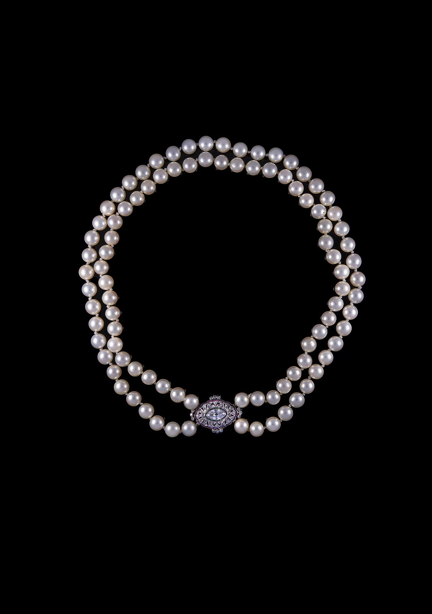

Art Deco
Art Deco Pearl Choker
Cultured pearl choker with a large centre diamond, rubies and emeralds. Portuguese work of the Art Deco period.
- Attribution
- Art Deco period · Portuguese
- Era
- Art Deco · 1920 – 1935
- Category
- Necklaces & Pendants
- Price
- Price on request
Condition report available on request · Insured, tracked worldwide shipping